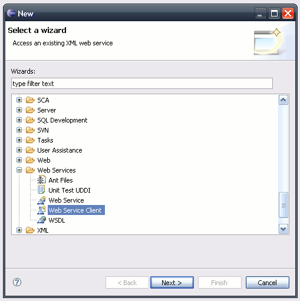
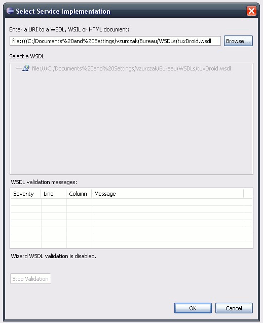
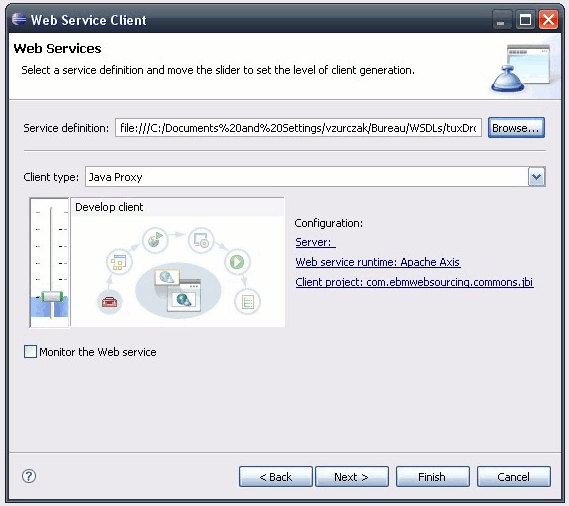
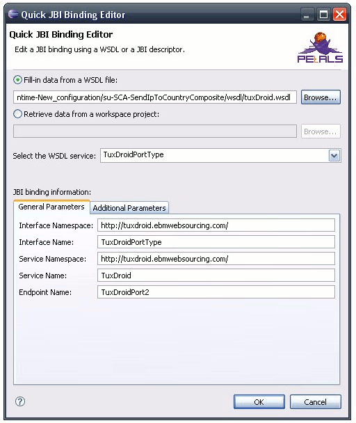

Completing your SCA application for Petals is almost identical to editing for any other
SCA application.
The main difference is about the use of the references and the configuration
of the bindings.
This page only deals with these differences.
This is the heavy part of the process.
What you need here is the interface of the Petals service. The only case where this interface
will be a Java interface is when you created the service yourself and that you kept the sources.
Most of the time, this interface will be a WSDL interface.
The interface has two purposes.
If you come with a Java interface, the first point will be easy. But you will have to
fill in the attribute values manually for the second step. If you come with a WSDL
interface, it's the exact opposite. You will have to generate a Java interface from the WSDL,
so that the implementation can compile. But the second step will be easy.
The different possibilities are considered below.
The implementation part is done as usual with SCA Java projects. You can either add annotations on the references in the code, or reference them in the composite file.
The JBI binding attributes will have to be specified by hand.
With the SCA Composite Designer, it can be done by right-clicking on the JBI binding to edit, selecting
Show Properties View and then modifying the values in the form.

Regarding the implementation, the first thing to do is creating a Java interface from this WSDL. There are many wsdl2java libraries. You can use any of them. However, you should know that the generated Java code will have dependencies to data-binding libraries (e.g. JAX-B, aegis). Therefore, you will have to embed these libraries in your code and use it in the right manner (e.g. with JAX-B, you have to use factories to instantiate beans, you can't use "new Bean()").
The most simple solution we have found for instance, is to use the WTP tools (WTP is the Eclipse project dealing with Web services and JEE). To generate a simple code, select File > New > Other.... Then, select Web Services > Web Service Client.
Give the location of your WSDL.
Make sure the level is set to "Develop Client".
Specify the output location and end up the wizard by clicking Finish. The generated code has some data-binding parts, but there are really few ones and you can remove it quickly. The code to remove is located in the operations parameter types. You can also delete the stub, the locator and the proxy.
This part is an important weakness of the SCA tooling. It should be improved soon. Waiting for this, the easiest solution is to use the Web Service client wizard.
Unlike the implementation part, the binding part is quite easy to deal with.
Right-click on the JBI binding to edit and select Edit as > JBI Binding.
A dialog shows up. You can fill in the fields automatically by either selecting a WSDL or by selecting a Petals project in the workspace. When you have selected a WSDL, don't forget to select the service, since there may be several ones described in a WSDL file. Only the additional parameters may have to be completed by hand if you have specific needs.

The work to perform on SCA services is not very hard, but it has to be done.
JBI bindings associated with an SCA service must have the following fields completed:
Other fields are optional.
The fastest way to proceed is to generate the WSDL first, and then use right-click action Edit as > JBI Binding
to set all the fields. Also, make sure the generated WSDL is located in the 'wsdl' folder, which is at the project root.
The content of this folder will be copied in the deployment archive for Petals.
To generate a WSDL from a Java interface, you can use one of the java2ws(dl) libraries you can find on the internet. You can also use the WSDL Tools plug-in (see the associated documentation).
This is a summary of the elements that must be defined in your Petals SCA application.